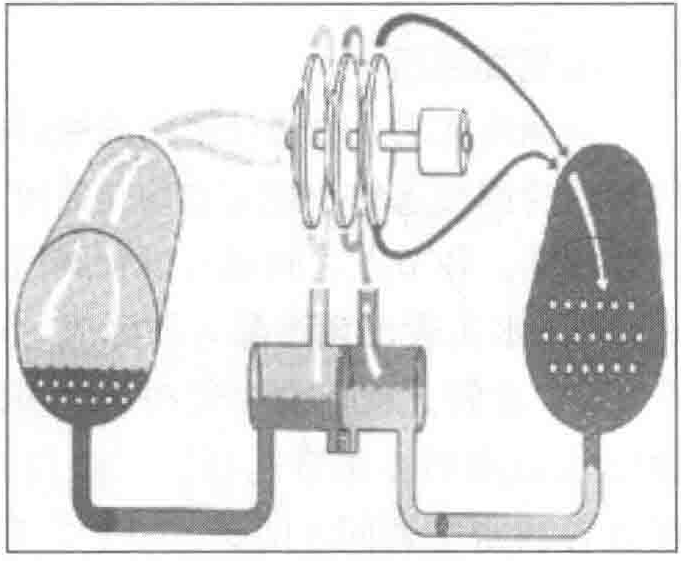
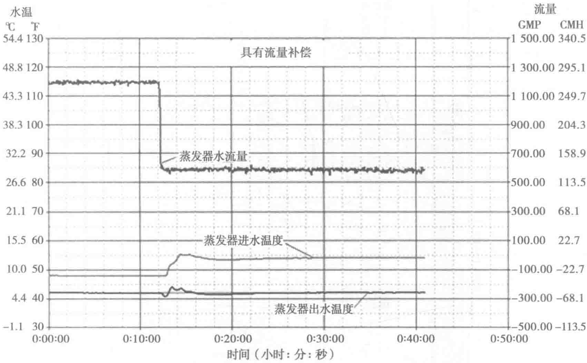

同时，在三级压缩的过程中设置两级节能器（见图10-29），与不带经济器的冷水机组相比，相同制冷工况下节电约8%～10%。

机组采用R123制冷剂，是替代冷媒中效率最高的一种，其理论制冷循环效率为7.44。由于R123的物理特性，机组处于负压运行状态，运行时不会有冷媒泄漏的风险，泄漏量仅为正压冷媒的1/15。此外，机组还自带新型高效的抽排气装置来防止空气进入压缩循环。
机组还具有良好的自适应控制功能。机载控制器不但可以根据冷水机组出水温度变化调节机组负荷，而且还能根据冷水机组进水温度变化来预测空调负荷变化对出水温度的影响。因此冷水机组允许流量变化率较大，能达到每分钟30%的变化率；同时还能扩充蒸发器水侧的压差补偿，这样冷水机组的允许流量变化率可以到达每分钟50%。流量补偿控制可在大流量时控制水温波动，在最小流量时精确控制水温。图10-30为蒸发器流量突然变化时出水温度的变化情况。

总体而言，此机组具有良好的工作表现情况，根据AHRI条件对机组进行测试，可以得